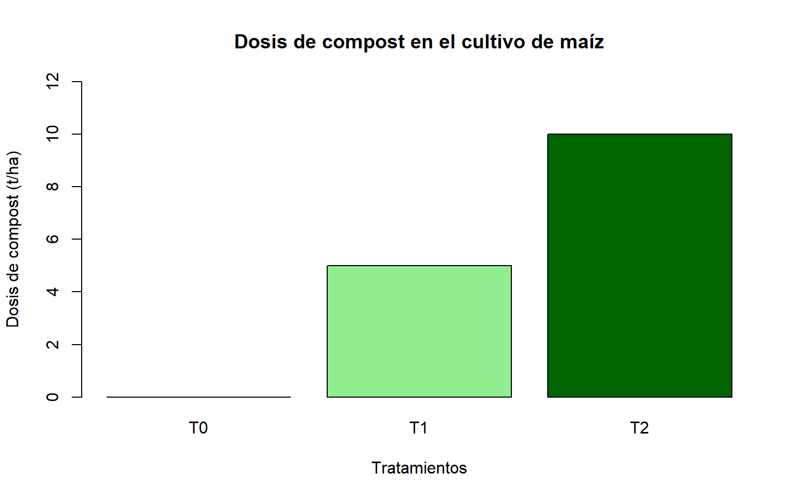

Efecto de tres dosis de compost sobre el crecimiento y rendimiento del maíz
Autor/a
Joel
Propuesta de experimento
Título: Efecto de tres dosis de compost sobre el crecimiento y rendimiento del cultivo de maíz (Zea mays L.).
Tipo de investigación: Experimental.
Diseño experimental: Diseño de Bloques Completos al Azar (DBCA).
Lugar propuesto: Chachapoyas, Amazonas, Perú.
1. Introducción
El maíz (Zea mays L.) es uno de los cultivos de mayor importancia en la agricultura, debido a su utilización en la alimentación humana, alimentación animal y diferentes actividades agroindustriales.
El crecimiento y rendimiento de este cultivo dependen de diversos factores, entre ellos la disponibilidad de nutrientes, las características del suelo y las condiciones ambientales.
El compost es un abono orgánico obtenido mediante la descomposición controlada de materiales orgánicos. Su aplicación puede contribuir al mejoramiento de las propiedades del suelo y al suministro de nutrientes para las plantas.
Sin embargo, la respuesta del cultivo puede variar según la cantidad de compost aplicada. Por esta razón, se propone evaluar tres dosis de compost para determinar su efecto sobre el crecimiento y rendimiento del maíz.
2. Objetivos
Objetivo general
Evaluar el efecto de tres dosis de compost sobre el crecimiento y rendimiento del cultivo de maíz (Zea mays L.).
Objetivos específicos
Evaluar la altura de las plantas de maíz bajo diferentes dosis de compost.
Determinar el efecto de las dosis de compost sobre el diámetro del tallo.
Comparar el rendimiento de grano del cultivo de maíz entre los tres tratamientos.
3. Hipótesis
Hipótesis nula (H0):
Las tres dosis de compost no producen diferencias significativas en el rendimiento de grano del cultivo de maíz.
Hipótesis alternativa (H1):
Al menos una dosis de compost produce una diferencia significativa en el rendimiento de grano del cultivo de maíz.
4. Factor en estudio
El experimento tendrá un solo factor independiente:
Factor A: Dosis de compost.
Se evaluarán tres niveles:
A0: Sin aplicación de compost (0 t/ha).
A1: Aplicación de 5 t/ha de compost.
A2: Aplicación de 10 t/ha de compost.
Para reducir la influencia de otros factores, se utilizará la misma variedad de maíz, distanciamiento de siembra y manejo agronómico en todos los tratamientos.
5. Tratamientos
El experimento estará conformado por tres tratamientos con cuatro repeticiones cada uno.
Cada parcela tendrá un área propuesta de 12 m². La cantidad de compost se calculará según la superficie de cada unidad experimental.
Gráfico de las dosis propuestas
barplot(height =c(0, 5, 10),names.arg =c("T0", "T1", "T2"),col =c("gray80", "lightgreen", "darkgreen"),border ="black",main ="Dosis de compost en el cultivo de maíz",xlab ="Tratamientos",ylab ="Dosis de compost (t/ha)",ylim =c(0, 12))

Figura 1: Dosis de compost consideradas en el experimento.
6. Diseño experimental
Se empleará un Diseño de Bloques Completos al Azar (DBCA), debido a que el experimento se propone para condiciones de campo, donde pueden existir diferencias de suelo entre sectores del terreno.
El experimento tendrá las siguientes características:
Factor en estudio: Dosis de compost.
Número de tratamientos: 3.
Número de bloques: 4.
Repeticiones por tratamiento: 4.
Número de unidades experimentales: 12.
Unidad experimental: Una parcela de maíz.
Dimensiones de cada parcela: 3 m × 4 m.
Área por parcela: 12 m².
Área experimental neta: 144 m².
El número de unidades experimentales se calculará mediante:
\[
N = t \times b
\]
Donde:
\(t\) = número de tratamientos.
\(b\) = número de bloques.
Por lo tanto:
\[
N = 3 \times 4 = 12
\]
El área experimental neta no incluye caminos ni separaciones entre parcelas.
7. Aleatorización de tratamientos
Los tratamientos serán distribuidos aleatoriamente dentro de cada uno de los cuatro bloques.
Cada bloque contendrá los tres tratamientos, permitiendo que todos sean evaluados bajo las condiciones presentes en cada sector del terreno.
Para realizar la aleatorización se utilizará el software R.
Figura 2: Croquis de distribución aleatoria de tratamientos en un DBCA.
Descripción de tratamientos:
T0: Sin compost.
T1: Aplicación de 5 t/ha de compost.
T2: Aplicación de 10 t/ha de compost.
La distribución presentada constituye una propuesta de aleatorización y deberá adaptarse a las condiciones del terreno al ejecutar el experimento.
9. Metodología del experimento
Preparación de las unidades experimentales
Se seleccionará un terreno agrícola con condiciones adecuadas para el cultivo de maíz.
Se realizará la limpieza y preparación del suelo, seguida de la delimitación de doce parcelas experimentales de 3 m de ancho por 4 m de largo.
Las parcelas serán agrupadas en cuatro bloques, considerando las posibles diferencias del terreno.
Se utilizarán semillas de maíz de una misma variedad y calidad uniforme.
Aplicación de tratamientos
Antes de la siembra se realizará la distribución de los tratamientos de acuerdo con la aleatorización previamente establecida.
Las dosis de compost serán:
T0: Sin aplicación de compost.
T1: Aplicación de 6 kg de compost por parcela.
T2: Aplicación de 12 kg de compost por parcela.
El compost será incorporado al suelo antes de la siembra. Se utilizará compost estabilizado y se procurará mantener un manejo uniforme en todas las parcelas.
Siembra y manejo agronómico
La siembra se realizará utilizando un distanciamiento propuesto de 0,75 m entre surcos y 0,30 m entre plantas.
Durante el desarrollo del cultivo se realizarán actividades de riego, control de malezas y manejo fitosanitario de manera uniforme.
El cultivo será monitoreado periódicamente para observar su crecimiento y desarrollo.
Evaluación
Se realizarán evaluaciones de crecimiento durante el desarrollo vegetativo del cultivo.
La altura de planta y el diámetro del tallo se registrarán mediante mediciones en plantas seleccionadas de cada parcela.
Al momento de la cosecha se determinará el rendimiento de grano por unidad experimental, considerando la superficie útil y una humedad de grano estandarizada.
10. Variables de evaluación
Las variables propuestas permitirán evaluar el crecimiento vegetativo y la producción del cultivo de maíz.
Altura de planta (cm): Se medirá desde la base de la planta hasta el punto de referencia establecido para la evaluación.
Diámetro del tallo (mm): Se determinará mediante un vernier, tomando las mediciones a una altura uniforme del tallo.
Rendimiento de grano (t/ha): Se calculará a partir de la producción de grano obtenida en el área útil de cada parcela.
variables <-data.frame(Variable =c("Altura de planta","Diámetro del tallo","Rendimiento de grano" ),Unidad =c("cm","mm","t/ha" ),Evaluacion =c("Durante el crecimiento","Durante el crecimiento","Al momento de la cosecha" ))knitr::kable( variables,align ="c")
Tabla 3: Variables de evaluación propuestas
Variable
Unidad
Evaluacion
Altura de planta
cm
Durante el crecimiento
Diámetro del tallo
mm
Durante el crecimiento
Rendimiento de grano
t/ha
Al momento de la cosecha
Para las variables de crecimiento se propone evaluar diez plantas representativas por parcela. El promedio de estas mediciones será utilizado como valor de la unidad experimental en cada fecha.
11. Modelo y análisis estadístico propuesto
El modelo estadístico correspondiente al Diseño de Bloques Completos al Azar es:
\[
Y_{ij} = \mu + T_i + B_j + \varepsilon_{ij}
\]
Donde:
\(Y_{ij}\) = valor observado de la variable respuesta.
\(\mu\) = media general del experimento.
\(T_i\) = efecto del tratamiento.
\(B_j\) = efecto del bloque.
\(\varepsilon_{ij}\) = error experimental.
Una vez obtenidos los datos de campo, se realizará un análisis de varianza (ANOVA) para determinar si existen diferencias significativas entre las dosis de compost.
Se verificará el cumplimiento de los supuestos del modelo estadístico. Cuando corresponda, se realizará la comparación de medias mediante la prueba de Tukey con un nivel de significancia del 5 %.
Los resultados podrán representarse mediante tablas y gráficos elaborados en RStudio.
12. Referencias bibliográficas
Gómez, K. A., & Gómez, A. A. (1984). Statistical Procedures for Agricultural Research (2nd ed.). John Wiley & Sons.
Misra, R. V., Roy, R. N., & Hiraoka, H. (2003). On-farm composting methods. Food and Agriculture Organization of the United Nations.
Montgomery, D. C. (2017). Design and Analysis of Experiments (9th ed.). John Wiley & Sons.
R Core Team. (2026). R: A Language and Environment for Statistical Computing. R Foundation for Statistical Computing. https://www.r-project.org/
Conclusión de la propuesta
El experimento propuesto permitirá evaluar el efecto de tres dosis de compost sobre el crecimiento y rendimiento del cultivo de maíz mediante un Diseño de Bloques Completos al Azar.
La planificación contempla tres tratamientos, cuatro bloques y doce unidades experimentales, con una distribución aleatoria dentro de cada bloque.
La propuesta constituye una aplicación práctica del diseño experimental en agronomía y permitirá desarrollar un análisis estadístico cuando se obtengan los datos correspondientes.
Ejecutar el código
---title: "Diseño Experimental"subtitle: "Efecto de tres dosis de compost sobre el crecimiento y rendimiento del maíz"author: "Joel"lang: esengine: knitrformat: html: theme: cosmo toc: true toc-title: "Contenido" toc-location: left code-fold: false code-tools: true number-sections: falseexecute: enabled: true echo: true eval: true output: true warning: false message: false---# Propuesta de experimento**Título:** Efecto de tres dosis de compost sobre el crecimiento y rendimiento del cultivo de maíz (*Zea mays* L.).**Tipo de investigación:** Experimental.**Diseño experimental:** Diseño de Bloques Completos al Azar (DBCA).**Lugar propuesto:** Chachapoyas, Amazonas, Perú.# 1. IntroducciónEl maíz (*Zea mays* L.) es uno de los cultivos de mayor importancia en la agricultura, debido a su utilización en la alimentación humana, alimentación animal y diferentes actividades agroindustriales.El crecimiento y rendimiento de este cultivo dependen de diversos factores, entre ellos la disponibilidad de nutrientes, las características del suelo y las condiciones ambientales.El compost es un abono orgánico obtenido mediante la descomposición controlada de materiales orgánicos. Su aplicación puede contribuir al mejoramiento de las propiedades del suelo y al suministro de nutrientes para las plantas.Sin embargo, la respuesta del cultivo puede variar según la cantidad de compost aplicada. Por esta razón, se propone evaluar tres dosis de compost para determinar su efecto sobre el crecimiento y rendimiento del maíz.# 2. Objetivos## Objetivo generalEvaluar el efecto de tres dosis de compost sobre el crecimiento y rendimiento del cultivo de maíz (*Zea mays* L.).## Objetivos específicos1. Evaluar la altura de las plantas de maíz bajo diferentes dosis de compost.2. Determinar el efecto de las dosis de compost sobre el diámetro del tallo.3. Comparar el rendimiento de grano del cultivo de maíz entre los tres tratamientos.# 3. Hipótesis**Hipótesis nula (H0):**Las tres dosis de compost no producen diferencias significativas en el rendimiento de grano del cultivo de maíz.**Hipótesis alternativa (H1):**Al menos una dosis de compost produce una diferencia significativa en el rendimiento de grano del cultivo de maíz.# 4. Factor en estudioEl experimento tendrá un solo factor independiente:**Factor A: Dosis de compost.**Se evaluarán tres niveles:- **A0:** Sin aplicación de compost (0 t/ha).- **A1:** Aplicación de 5 t/ha de compost.- **A2:** Aplicación de 10 t/ha de compost.Para reducir la influencia de otros factores, se utilizará la misma variedad de maíz, distanciamiento de siembra y manejo agronómico en todos los tratamientos.# 5. TratamientosEl experimento estará conformado por tres tratamientos con cuatro repeticiones cada uno.```{r}#| label: tbl-prueba#| tbl-cap: "Dosis de compost propuestas para el maíz"tratamientos <-data.frame(Tratamiento =c("T0", "T1", "T2"),Dosis =c(0, 5, 10),Repeticiones =c(4, 4, 4))knitr::kable( tratamientos,col.names =c("Tratamiento","Dosis (t/ha)","Repeticiones" ),align ="c")```Cada parcela tendrá un área propuesta de 12 m². La cantidad de compost se calculará según la superficie de cada unidad experimental.## Gráfico de las dosis propuestas```{r}#| label: fig-dosis#| fig-cap: "Dosis de compost consideradas en el experimento."#| fig-width: 8#| fig-height: 5barplot(height =c(0, 5, 10),names.arg =c("T0", "T1", "T2"),col =c("gray80", "lightgreen", "darkgreen"),border ="black",main ="Dosis de compost en el cultivo de maíz",xlab ="Tratamientos",ylab ="Dosis de compost (t/ha)",ylim =c(0, 12))```# 6. Diseño experimentalSe empleará un **Diseño de Bloques Completos al Azar (DBCA)**, debido a que el experimento se propone para condiciones de campo, donde pueden existir diferencias de suelo entre sectores del terreno.El experimento tendrá las siguientes características:- **Factor en estudio:** Dosis de compost.- **Número de tratamientos:** 3.- **Número de bloques:** 4.- **Repeticiones por tratamiento:** 4.- **Número de unidades experimentales:** 12.- **Unidad experimental:** Una parcela de maíz.- **Dimensiones de cada parcela:** 3 m × 4 m.- **Área por parcela:** 12 m².- **Área experimental neta:** 144 m².El número de unidades experimentales se calculará mediante:$$N = t \times b$$Donde:- $t$ = número de tratamientos.- $b$ = número de bloques.Por lo tanto:$$N = 3 \times 4 = 12$$El área experimental neta no incluye caminos ni separaciones entre parcelas.# 7. Aleatorización de tratamientosLos tratamientos serán distribuidos aleatoriamente dentro de cada uno de los cuatro bloques.Cada bloque contendrá los tres tratamientos, permitiendo que todos sean evaluados bajo las condiciones presentes en cada sector del terreno.Para realizar la aleatorización se utilizará el software R.```{r}#| label: tbl-aleatorizacion#| tbl-cap: "Distribución aleatoria de tratamientos en cuatro bloques"set.seed(2026)bloques <-paste0("B", 1:4)diseno <-do.call( rbind,lapply(1:4, function(i) {data.frame(Bloque = bloques[i],Parcela =paste0("P", 1:3),Tratamiento =sample(c("T0", "T1", "T2"),size =3,replace =FALSE ) ) }))rownames(diseno) <-NULLknitr::kable( diseno,align ="c")```La función `set.seed(2026)` permite reproducir la misma distribución aleatoria cada vez que se ejecute el código.# 8. Croquis experimentalEl croquis representa la distribución de las doce parcelas correspondientes a los cuatro bloques experimentales.Cada bloque contiene tres parcelas, identificadas con los tratamientos T0, T1 y T2.```{r}#| label: fig-croquis#| fig-cap: "Croquis de distribución aleatoria de tratamientos en un DBCA."#| fig-width: 9#| fig-height: 5colores <-c(T0 ="#E2E8F0",T1 ="#B7E4C7",T2 ="#74C69D")plot(NA,xlim =c(0, 4),ylim =c(0, 3.7),xlab ="",ylab ="",main ="Distribución experimental del maíz",axes =FALSE)for (b in1:4) {text(x = b -0.5,y =3.35,labels =paste("Bloque", b),font =2,cex =1 ) datos_bloque <- diseno[ diseno$Bloque == bloques[b], ]for (p in1:3) { tratamiento <- datos_bloque$Tratamiento[p]rect(xleft = b -0.9,ybottom =3- p +0.1,xright = b -0.1,ytop =4- p -0.1,col = colores[tratamiento],border ="darkgreen",lwd =1.5 )text(x = b -0.5,y =3.5- p,labels =paste0( tratamiento, "\n", datos_bloque$Parcela[p] ),cex =1 ) }}box()```**Descripción de tratamientos:**- **T0:** Sin compost.- **T1:** Aplicación de 5 t/ha de compost.- **T2:** Aplicación de 10 t/ha de compost.La distribución presentada constituye una propuesta de aleatorización y deberá adaptarse a las condiciones del terreno al ejecutar el experimento.# 9. Metodología del experimento## Preparación de las unidades experimentalesSe seleccionará un terreno agrícola con condiciones adecuadas para el cultivo de maíz.Se realizará la limpieza y preparación del suelo, seguida de la delimitación de doce parcelas experimentales de 3 m de ancho por 4 m de largo.Las parcelas serán agrupadas en cuatro bloques, considerando las posibles diferencias del terreno.Se utilizarán semillas de maíz de una misma variedad y calidad uniforme.## Aplicación de tratamientosAntes de la siembra se realizará la distribución de los tratamientos de acuerdo con la aleatorización previamente establecida.Las dosis de compost serán:- T0: Sin aplicación de compost.- T1: Aplicación de 6 kg de compost por parcela.- T2: Aplicación de 12 kg de compost por parcela.El compost será incorporado al suelo antes de la siembra. Se utilizará compost estabilizado y se procurará mantener un manejo uniforme en todas las parcelas.## Siembra y manejo agronómicoLa siembra se realizará utilizando un distanciamiento propuesto de 0,75 m entre surcos y 0,30 m entre plantas.Durante el desarrollo del cultivo se realizarán actividades de riego, control de malezas y manejo fitosanitario de manera uniforme.El cultivo será monitoreado periódicamente para observar su crecimiento y desarrollo.## EvaluaciónSe realizarán evaluaciones de crecimiento durante el desarrollo vegetativo del cultivo.La altura de planta y el diámetro del tallo se registrarán mediante mediciones en plantas seleccionadas de cada parcela.Al momento de la cosecha se determinará el rendimiento de grano por unidad experimental, considerando la superficie útil y una humedad de grano estandarizada.# 10. Variables de evaluaciónLas variables propuestas permitirán evaluar el crecimiento vegetativo y la producción del cultivo de maíz.**Altura de planta (cm):** Se medirá desde la base de la planta hasta el punto de referencia establecido para la evaluación.**Diámetro del tallo (mm):** Se determinará mediante un vernier, tomando las mediciones a una altura uniforme del tallo.**Rendimiento de grano (t/ha):** Se calculará a partir de la producción de grano obtenida en el área útil de cada parcela.```{r}#| label: tbl-variables#| tbl-cap: "Variables de evaluación propuestas"variables <-data.frame(Variable =c("Altura de planta","Diámetro del tallo","Rendimiento de grano" ),Unidad =c("cm","mm","t/ha" ),Evaluacion =c("Durante el crecimiento","Durante el crecimiento","Al momento de la cosecha" ))knitr::kable( variables,align ="c")```Para las variables de crecimiento se propone evaluar diez plantas representativas por parcela. El promedio de estas mediciones será utilizado como valor de la unidad experimental en cada fecha.# 11. Modelo y análisis estadístico propuestoEl modelo estadístico correspondiente al Diseño de Bloques Completos al Azar es:$$Y_{ij} = \mu + T_i + B_j + \varepsilon_{ij}$$Donde:- $Y_{ij}$ = valor observado de la variable respuesta.- $\mu$ = media general del experimento.- $T_i$ = efecto del tratamiento.- $B_j$ = efecto del bloque.- $\varepsilon_{ij}$ = error experimental.Una vez obtenidos los datos de campo, se realizará un análisis de varianza (ANOVA) para determinar si existen diferencias significativas entre las dosis de compost.Se verificará el cumplimiento de los supuestos del modelo estadístico. Cuando corresponda, se realizará la comparación de medias mediante la prueba de Tukey con un nivel de significancia del 5 %.Los resultados podrán representarse mediante tablas y gráficos elaborados en RStudio.# 12. Referencias bibliográficas- Gómez, K. A., & Gómez, A. A. (1984). *Statistical Procedures for Agricultural Research* (2nd ed.). John Wiley & Sons.- Misra, R. V., Roy, R. N., & Hiraoka, H. (2003). *On-farm composting methods*. Food and Agriculture Organization of the United Nations.- Montgomery, D. C. (2017). *Design and Analysis of Experiments* (9th ed.). John Wiley & Sons.- R Core Team. (2026). *R: A Language and Environment for Statistical Computing*. R Foundation for Statistical Computing. https://www.r-project.org/# Conclusión de la propuestaEl experimento propuesto permitirá evaluar el efecto de tres dosis de compost sobre el crecimiento y rendimiento del cultivo de maíz mediante un Diseño de Bloques Completos al Azar.La planificación contempla tres tratamientos, cuatro bloques y doce unidades experimentales, con una distribución aleatoria dentro de cada bloque.La propuesta constituye una aplicación práctica del diseño experimental en agronomía y permitirá desarrollar un análisis estadístico cuando se obtengan los datos correspondientes.